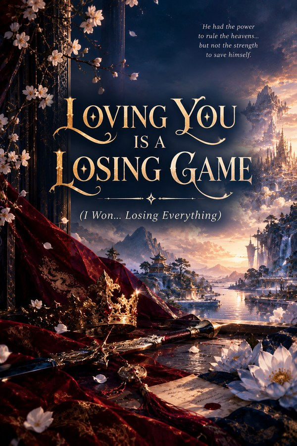

Loving You Is a Losing Game
I Won… Losing Everything
A fantasy romance of power, love, family, laughter, war, secrets, and a heart that may be stronger than the heavens themselves
Read on WattpadWhat if the strongest person in the heavens had only one weakness? And what if that weakness was the person he loved?
Six realms. One throne. Ancient powers. Heavenly laws. Warriors who can command armies. And at the center of it all stands His Majesty, the Heavenly Lord, ruler of the Six Realms and the strongest existence beneath the heavens.
To the world, he is untouchable: a ruler who can silence battlefields with a single command, a Lord before whom even the greatest beings of the realms bow. But those who know him beyond the throne know something very different. He loves sweets. He gets shamelessly excited over food. He annoys the people closest to him on purpose. He can walk into a terrifying battlefield like the strongest being alive and then return home expecting to be fed. He is playful, warm, ridiculously affectionate, sometimes unbearably stubborn, and despite ruling six realms, he has never learned how to love anything halfway. Especially her.
Aadhya was never meant to remain in anyone’s shadow. Strong-willed, fierce and confident, she earns her place through her own strength and rises to become one of the most formidable warriors in the heavens. She argues with him, scolds him, challenges him, laughs at him, worries about him, and, perhaps most dangerously of all, she sees the person behind the crown. Their story doesn’t begin with a throne. It begins with childhood, with growing up together, with small arguments and ridiculous moments, with a bond that slowly becomes something neither of them can walk away from.
But Heaven has laws. In the Six Realms, power determines hierarchy, and hierarchy determines everything. Even love. And when His Majesty chooses to challenge one of the oldest rules of Heaven for the woman he loves, the heavens are forced to confront something they never expected: what happens when love refuses to know its place?
What follows is a story of power, family, friendship, war, loyalty, promises and sacrifice. There will be ridiculous palace moments, stolen sweets, teasing, weddings and the kind of family chaos that makes even an emperor forget he is supposed to be terrifying. There will also be battlefields where one person stands against forces that should be impossible to defeat, and weapons carrying pieces of something far more precious than steel. There will be moments when the strongest person in the heavens looks completely invincible. And moments when the reader may begin to wonder… is he really?
A joke you laugh at in one chapter may hurt differently later. A promise that seems innocent may carry another meaning. So don’t look for the answers too early.
Would you still call it winning if the price of victory was losing everything?
Meet them
- His Majesty, the Heavenly Lord. Ruler of the Six Realms. Conquers armies, still gets excited over sweets.
- Aadhya. Fierce enough to challenge him, soft enough to become his home.
- Rudra. The second-highest existence in the heavens, the Lord’s protector and elder-brother figure. Protecting him stopped being duty and became home.
- Rudrani. Rudra’s wife, daughter of the Fire Realm’s ruler. Brilliant and warm-hearted.
Sometimes you can win the person you fought the entire world for, and still lose something you never thought you could live without. Welcome to the Six Realms.